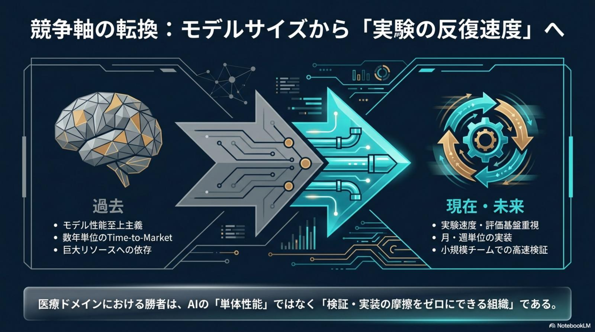
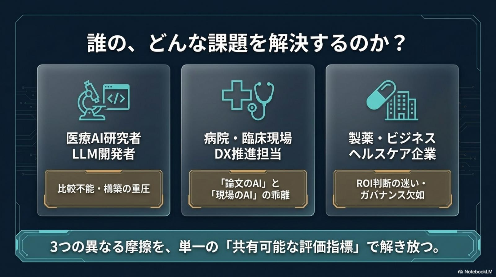
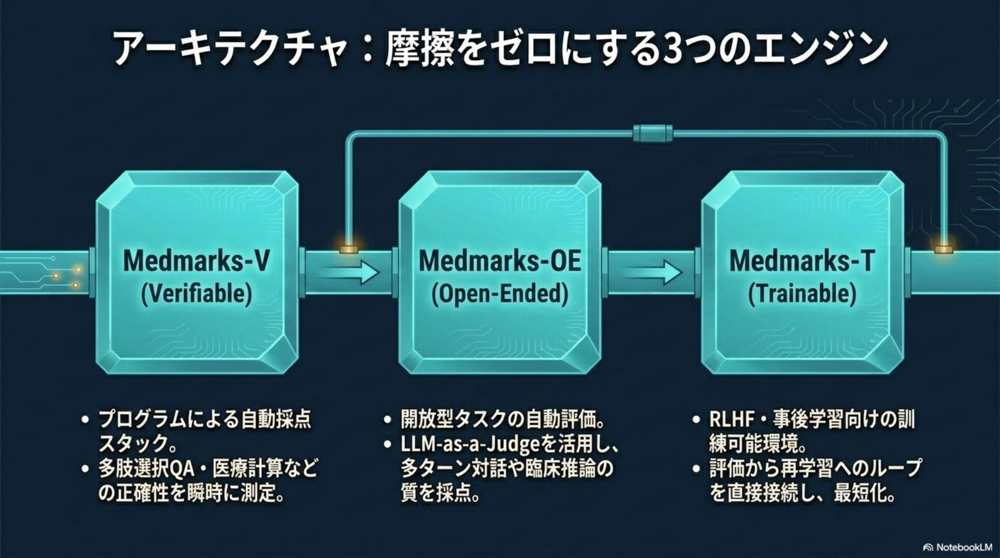
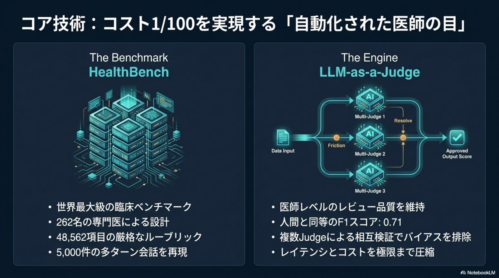
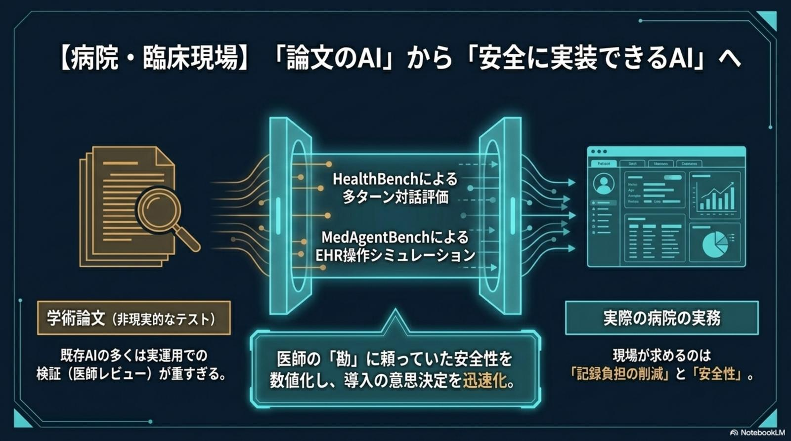
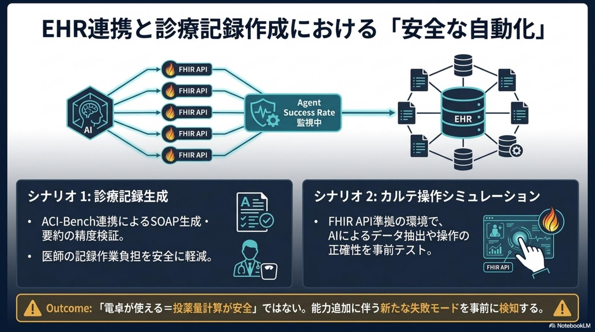
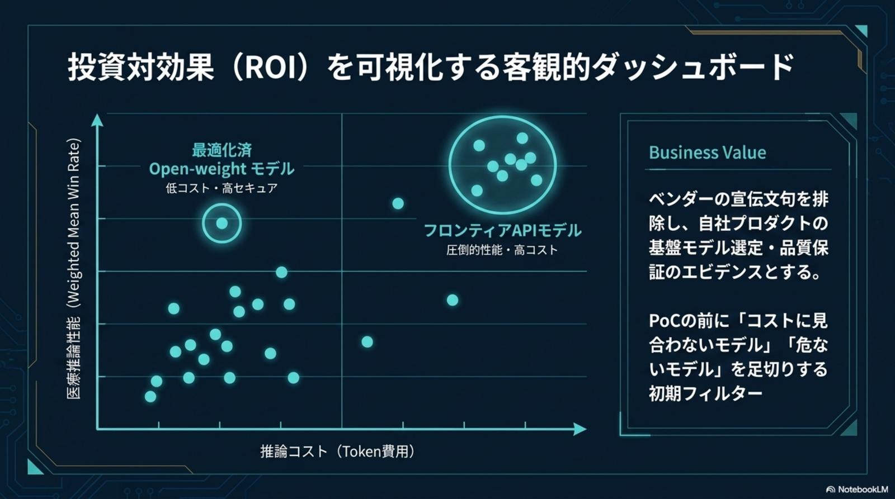
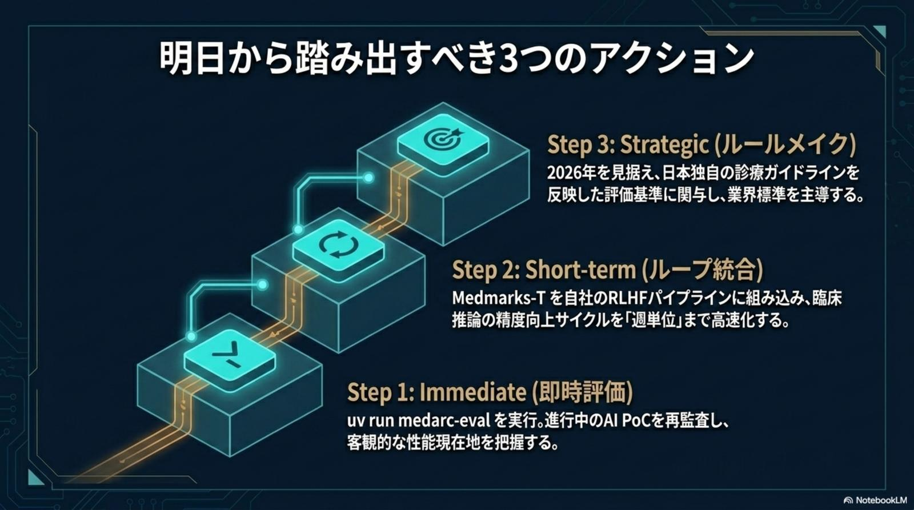
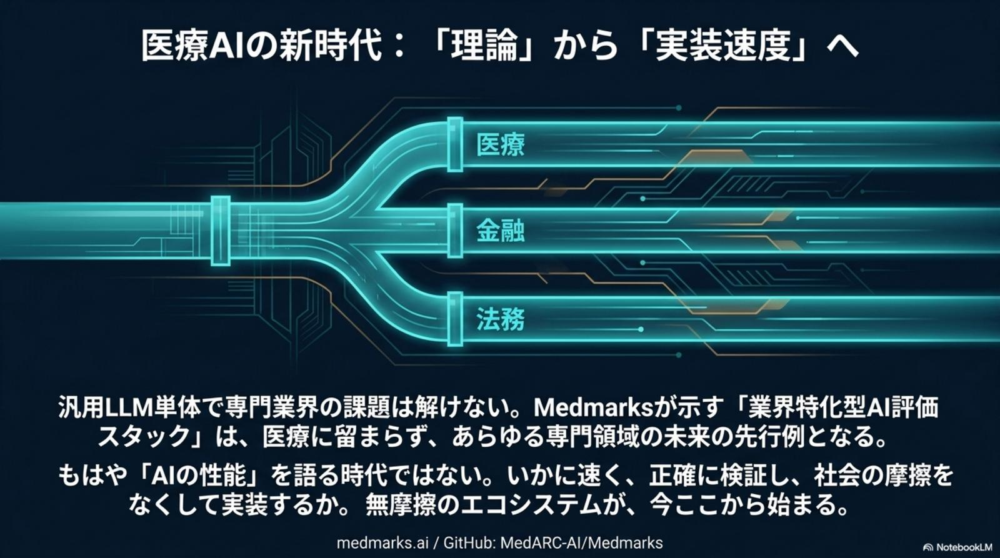
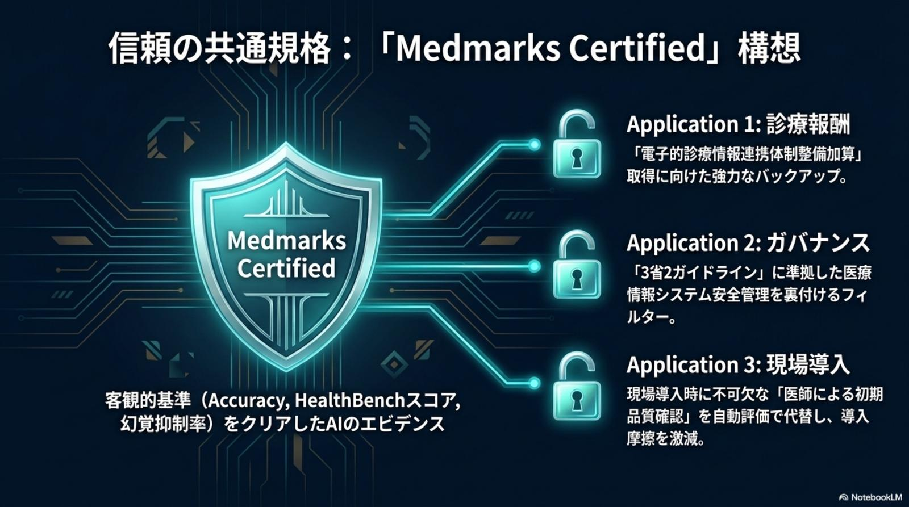

比較不能・構築の重圧
開発コストの80% が RAG 整合性検証・幻覚抑制・モデル間比較といった「周辺作業」に飲み込まれる。評価スタックを自前で組むため、論文の再現性と他モデルとの公正比較が原理的に困難だ。
Frictionless Clinical AI · Medmarks v1.x · Issue № 05/22
医療 AI 開発の最大のボトルネックは、もはやモデルの「単体性能」ではない。開発コストの80%を占める評価・検証の周辺作業こそが、研究を PoC で止め、臨床現場との乖離を生み、ROI 判断を遅らせる真の元凶だ。オープンソース評価基盤 Medmarks v1.x は、その摩擦を構造的にゼロへ近づける。
Medmarks-V（Verifiable）× Medmarks-OE（LLM-as-a-Judge / F1=0.71）× Medmarks-T（Trainable）× HealthBench（262 名の専門医・48,562 ルーブリック・5,000 多ターン会話）× MedAgentBench × uv 製の再現可能パイプライン。

医療ドメインにおける勝者は、AI の「単体性能」ではなく、「検証・実装の摩擦をゼロにできる組織」である。競争軸はモデルサイズから実験の反復速度へ、決定的に移動した。

「論文の AI」と「現場で安全に動く AI」の間には、深い溝がある。研究者・臨床現場・ヘルスケア企業——立場によって痛みは違うが、本質はすべて「共有可能な評価指標の欠如」に収斂する。
開発コストの80% が RAG 整合性検証・幻覚抑制・モデル間比較といった「周辺作業」に飲み込まれる。評価スタックを自前で組むため、論文の再現性と他モデルとの公正比較が原理的に困難だ。
既存 AI の多くは医師レビューによる検証コストが重すぎる。記録負担の削減と安全性こそ現場の本音だが、ベンチマーク上の精度は実装後の失敗モードを何も保証しない。
ベンダー説明は宣伝文句に偏り、PoC 前に「コストに見合わないモデル」「危ないモデル」を切り落とす客観的なフィルターがない。3 省 2 ガイドライン準拠の裏付けも、現状は各社バラバラに作っている。
データの偶発性・許容範囲・誤りの再現性は、いずれも「医師のレビュー」という重コストに依存。ミスの許容範囲を数値化できず、開発と安全性が相互に縛り合っている。

勝負を分けるのは、もはやパラメータ数や論文上の SOTA ではない。評価・検証パイプラインの自動化と再現性こそが、研究 → 検証 → 実装の高速化を支える唯一のレバーだ。
特筆すべきは uv（Astral 製）による再現可能なパイプラインだ。uv run medarc-eval 一発で、評価環境・依存・乱数シードが固定された再現環境がクラウド・オンプレを問わず再構築される。Medmarks-T を社内 RLHF パイプラインに接続するための DevPrep 工程として、組織を超えた「評価の共通言語」を成立させる。
Medmarks v1.x の中核は、Medmarks-V（Verifiable）/ Medmarks-OE（Open-Ended）/ Medmarks-T（Trainable）という 3 エンジンと、HealthBench / MedAgentBenchという 2 つのベンチマーク。性能評価・対話評価・再学習のループを同一規格で接続する。
3 エンジンは独立した評価器ではなく、研究 → 検証 → 再学習を一つの DAG として接続する。Medmarks-V でプログラム採点（多肢選択 QA・医療計算）の正確性を瞬時に測り、Medmarks-OE で多ターン対話と臨床推論の質を LLM-as-a-Judge で採点。スコア低位のサンプルは Medmarks-T へ流し、RLHF 訓練データへ自動還流する。評価から再学習までを直結し、ループを最短化することが、評価コスト 1/100 を成立させる構造だ。




Medmarks は最適化済 Open-weight モデルとフロンティア API モデルを、推論コスト × 医療推論性能（WMWR: Weighted Mean Win Rate）の同一座標系で並べる。ベンダーの宣伝文句を排除し、自社プロダクトの基盤モデル選定と品質保証のエビデンスとする。
ROI 軸の評価は単なる相対比較ではない。PoC の前に「コストに見合わないモデル」「危ないモデル」を足切りする初期フィルターとして機能し、選定理由を経営会議に提示できる定量根拠を残す。さらに Medmarks Certified 構想は、Accuracy・HealthBench スコア・幻覚抑制率という客観基準をクリアした AI に対して、診療報酬（電子的診療情報連携体制整備加算）/ ガバナンス（3 省 2 ガイドライン）/ 現場導入（医師による初期品質確認の代替）を同時に解錠する。

アーキテクトの評価ノート：Open-weight モデルを軽視するのは過去のロジックだ。Medmarks の WMWR 座標系では、最適化済 Open-weight モデルが「低コスト・高セキュア」象限を占め、フロンティア API モデルの「圧倒的性能・高コスト」象限と同じ尺度で評価できる。これにより、院内データを外部 API に流さない設計でも、客観的に十分な性能を担保できるかが PoC 前に判定可能になる。
医療 AI の社会実装は、もはや「評価インフラの整備」から始まる。立場ごとに最初の一歩は変わるが、すべてのステークホルダーに共通する 3 段ロケットがある。
uv run medarc-eval を実行し、進行中の AI PoC を再監査。客観的な性能現在地を、共有可能なスコアとして把握する。
Medmarks-T を自社 RLHF パイプラインに組み込み、臨床推論の精度向上サイクルを「週単位」まで高速化する。
2026 年を見据え、日本独自の診療ガイドラインを反映した評価基準に関与し、業界標準を主導する側へ回る。
院内・社内の評価基盤をMedmarks v1.x で統一し、各プロダクト・各チームのスコアを横断比較できる「共通言語」を組織に植え付ける。

汎用 LLM 単体では、専門業界の課題は解けない。Medmarks が示す「業界特化型 AI 評価スタック」は、医療に留まらず金融・法務といった他のレギュレーテッド領域の未来を先取りする。「無摩擦のエコシステム」が、ここから始まる。
もはや「AI の性能」を語る時代ではない。いかに速く、正確に検証し、社会の摩擦をなくして実装するか——その勝負がドメインを超えて始まる。Medmarks 構想は、医療領域での実証を通じて専門領域に必要な評価スタックの型を標準化し、規制業界の AI 導入そのものを再定義する。


Medmarks が告げるのは、医療 AI を社会実装するための具体的な作業マップだ。立場ごとに最初の一歩は変わる。
論文の SOTA 競争から離脱し、uv run medarc-eval による再現可能な公正比較を採用。Medmarks-V の自動採点と Medmarks-OE の LLM-as-a-Judge で、評価ループを「日単位」に短縮する。
導入候補 AI にHealthBench スコアと幻覚抑制率の提出を必須化。MedAgentBench の EHR シミュレーションで、ACI-Bench 連携による SOAP 生成と FHIR 操作の安全性を「本番投入前」に検証する。
ベンダーの宣伝文句ではなく、WMWR × 推論コストの ROI ダッシュボードを意思決定の中心へ。Medmarks Certified を取得した AI のみを社内導入候補とし、3 省 2 ガイドライン準拠を制度化する。
日本独自の診療ガイドラインを反映した評価基準作りに関与し、「Medmarks Certified 日本版」として診療報酬加算・電子的診療情報連携体制整備加算の取得条件に組み込む。業界標準を主導する側へ回る。
医療ドメインにおける勝者は、AI の「単体性能」ではなく 「検証・実装の摩擦をゼロにできる組織」 である。— Frictionless Clinical AI · Medmarks v1.x Blueprint · 2026-05-22